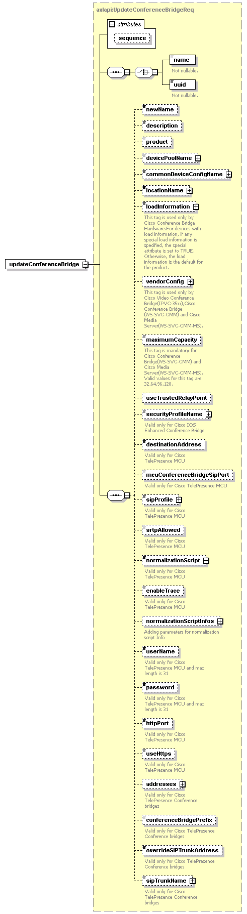

| diagram |  | ||||||||||||
| namespace | http://www.cisco.com/AXL/API/10.5 | ||||||||||||
| type | axlapi:UpdateConferenceBridgeReq | ||||||||||||
| properties |
|
||||||||||||
| children | name uuid newName description product devicePoolName commonDeviceConfigName locationName loadInformation vendorConfig maximumCapacity useTrustedRelayPoint securityProfileName destinationAddress mcuConferenceBridgeSipPort sipProfile srtpAllowed normalizationScript enableTrace normalizationScriptInfos userName password httpPort useHttps addresses conferenceBridgePrefix overrideSIPTrunkAddress sipTrunkName | ||||||||||||
| attributes |
|
||||||||||||
| source | <xsd:element name="updateConferenceBridge" type="axlapi:UpdateConferenceBridgeReq"/> |